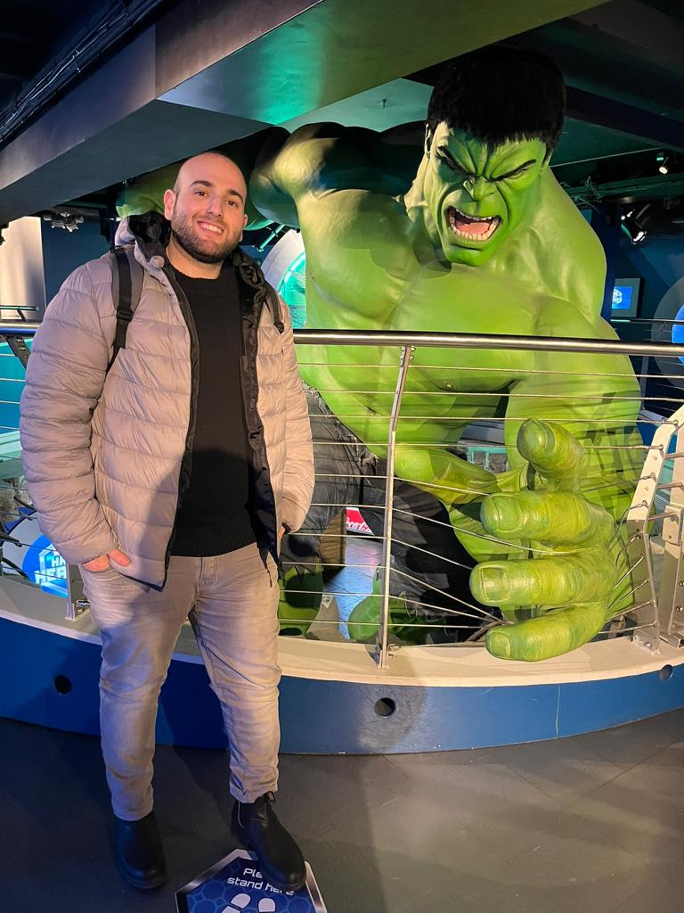

Welcome To My Website
Igal Ilarov

My belief
QA is much more than just testing or bugs.
QA is about taking something good and making it even better!
For that, you'll need the most imaginitive engineers.
Not just someone that can break things apart,
but will also come up with a vision of how to make
them better when putting them back together.


Home|About|Links
About Me
My name is igal Ilarov I am 27 years old and currently live in Kiryat Gat, Israel,
I am happily married for 1 year to my amazing wife,
and working for 3 Years as a QA in Aspire Call center Technologies. https://aspirecct.com/
Graduated Cyber Security course
Learning Qa Testing
in John Bryce (https://www.johnbryce.co.il/)
 Working with the next OS Platform: windows, linux.
Working with the next OS Platform: windows, linux.
Course topics:
active directory
firewall
IDS/IPS tools
malware analysis
network analysis
memory analysis
OSI model
powershell scripting
Technical Skills
Platforms: Windows, Linux, Browsers (Chrome, Firefox, Edge)
Programming: SQL, HTML, CSS.
Bug Tracking: JIRA.
Home| About |Links
Links

What is Software Testing?
Types Of Software Testing
30 Things Every New Software Tester Should Learn